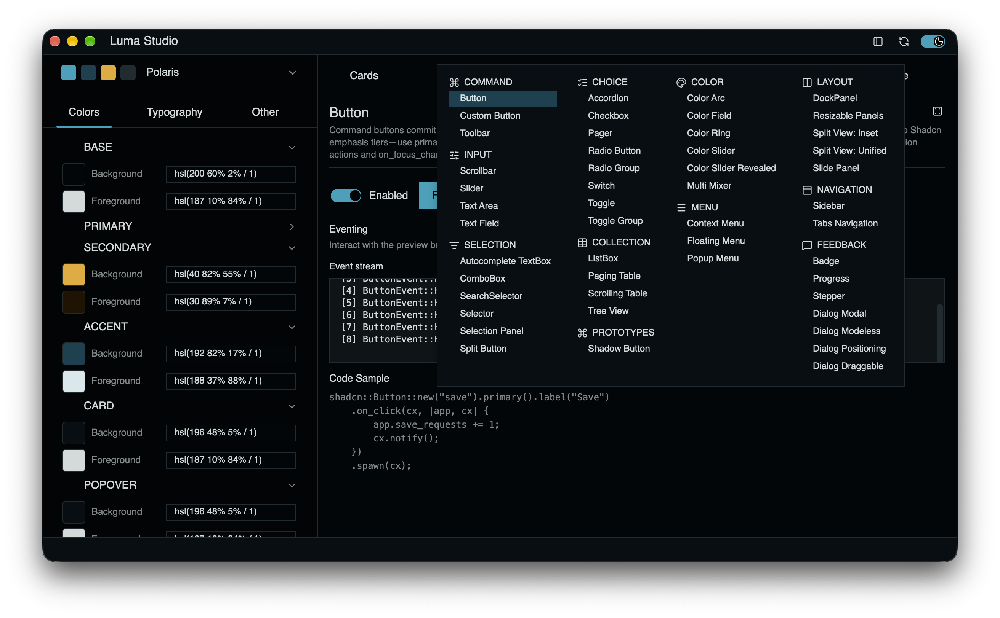

Getting Started
Native controls with reusable behavior and replaceable presentation.
Build with published crates
Use the libraries from crates.io in your own Rust application. No GitHub checkout is required. Start with cargo new luma-hello, then use the dependencies and src/main.rs in the complete app below. Run cargo build to build it or cargo run to launch it.
Support includes the SDK’s built-in light/dark styling, Shadcn, and Radix. Add gpui-luma-color = "0.2" for color controls or gpui-luma-plot = "0.2" for charts. Use a recent stable Rust toolchain and your platform’s native GPUI build prerequisites.
Use 0.2 for Luma dependencies to accept compatible 0.2.x releases. Run cargo update to refresh versions already recorded in Cargo.lock.
Run the sample apps

Explore the runnable apps alongside these docs. The repository includes workbenches for both Looks, a native chart gallery, and sample application shells. Their source shows how controls, themes, layouts, and events fit together in a complete application.
Use release builds for optimal app performance. Debug builds are intended for development and can make rendering and interactions noticeably slower. The app recipes below use release builds by default.
Clone the repository to run its sample apps. From the repository root, use the following justfile recipes. They launch native desktop applications in release mode by default; append -debug for development builds. Without just, use cargo run -p <package> --release.
| Sample / source | What to explore | Run |
|---|---|---|
| Luma Studio | Shadcn control examples and theme inspection. See Look-shadcn. | just luma-studio |
| Radix Studio | Radix style guide, palette editor, and control previews. See Look-radix. | just luma-radix |
| Plot Viz | Native SDK application with line, area, bar, pie/donut, radar, and radial chart galleries. Monochrome SDK controls support live light/dark switching; chart colors use independent palettes. See Plots. | just luma-plot |
| Detached shell | A sample application shell with detached-style regions. | just shell-detached |
| Split-titlebar shell | A sample shell with a split titlebar layout. | just shell-titlebar |
| VS Code shell | A workbench-style shell with configurable workspace regions. | just shell-vscode |
| Shell 2026 | An alternative application shell and titlebar composition. | just shell-2026 |
Shell themes: the shell recipes pass default. To choose a built-in Shadcn theme, run Cargo directly, for example cargo run -p luma-shell-vscode --release -- retro-arcade. Radix Studio uses Radix palettes; Plot Viz uses the SDK baseline. Neither accepts Shadcn named CSS themes.
Development: use just luma-studio-debug, just luma-radix-debug, or just luma-plot-debug. just luma-studio-trace enables Rust backtraces in debug mode; just luma-studio-perf enables the Metal HUD in release mode.
Library checks: just check, just build, just test-sdk, just clippy-sdk, and just doc-test target the five default library crates. Use just check-all, just build-all, or just ci for workspace checks. just ci runs formatting checks, workspace Clippy, and workspace tests.
Before a PR: run just pre-pr-checks. It runs formatting, workflow lint, native and WASM Clippy, library tests and doc-tests, documentation example compilation, Python helper/packaging tests, JavaScript syntax checks, and whitespace checks. Sample app tests and deployment builds are excluded. Install Node.js and actionlint on your PATH and add the wasm32-unknown-unknown Rust target first.
What you get
Controls, layouts, focus and input handling, semantic events, and customizable templates. Shadcn and Radix Look crates provide ready-to-use styling.
Philosophy & design
The SDK owns behavior. Templates own presentation. Looks configure a visual system. Customize content, modify a template, or replace it without rebuilding the control’s interaction logic.
A small complete app
A single window with a native Shadcn button. In the new app’s Cargo.toml, use these published dependencies:
[package]
name = "luma-hello"
version = "0.1.0"
edition = "2024"
[dependencies]
gpui = { package = "gpui-unofficial", version = "=1.24.2" }
gpui_platform = { package = "gpui-platform-gpui-unofficial", version = "=1.24.2", features = ["font-kit"] }
gpui-luma = "0.2"
gpui-luma-look-shadcn = "0.2"use gpui::{prelude::*, Context, Entity, Render, Window, WindowOptions, div};
use gpui_luma::controls::button::Button;
use gpui_luma::infra::presenter::HasPresenter;
use gpui_luma_look_shadcn as shadcn;
struct Hello {
button: Entity<Button>,
saves: usize,
}
impl Hello {
fn new(cx: &mut Context<Self>) -> Self {
let button = shadcn::Button::new("hello")
.primary().label("Hello, Luma")
.on_click(cx, |app, cx| {
app.saves += 1;
cx.notify();
})
.spawn(cx);
Self { button, saves: 0 }
}
}
impl Render for Hello {
fn render(&mut self, _: &mut Window, _: &mut Context<Self>)
-> impl IntoElement
{
div().size_full().flex().flex_col().gap_2().items_center().justify_center()
.child(self.button.clone())
.child(format!("Saved {} times", self.saves))
}
}
fn main() {
gpui_platform::application().run(|cx| {
if let Err(error) = gpui_luma::init(cx) {
eprintln!("Initialization failed: {error}");
return;
}
gpui_luma::focus::bind_default_focus_keys(cx);
gpui_luma::key_handling::bind_default_control_keys(cx);
if let Err(error) = cx.open_window(WindowOptions::default(), |_, cx| {
cx.new(Hello::new)
}) {
eprintln!("Window creation failed: {error}");
return;
}
cx.activate(true);
});
}This standalone app uses published crates and does not need the Luma workspace. Build with cargo build; launch with cargo run.